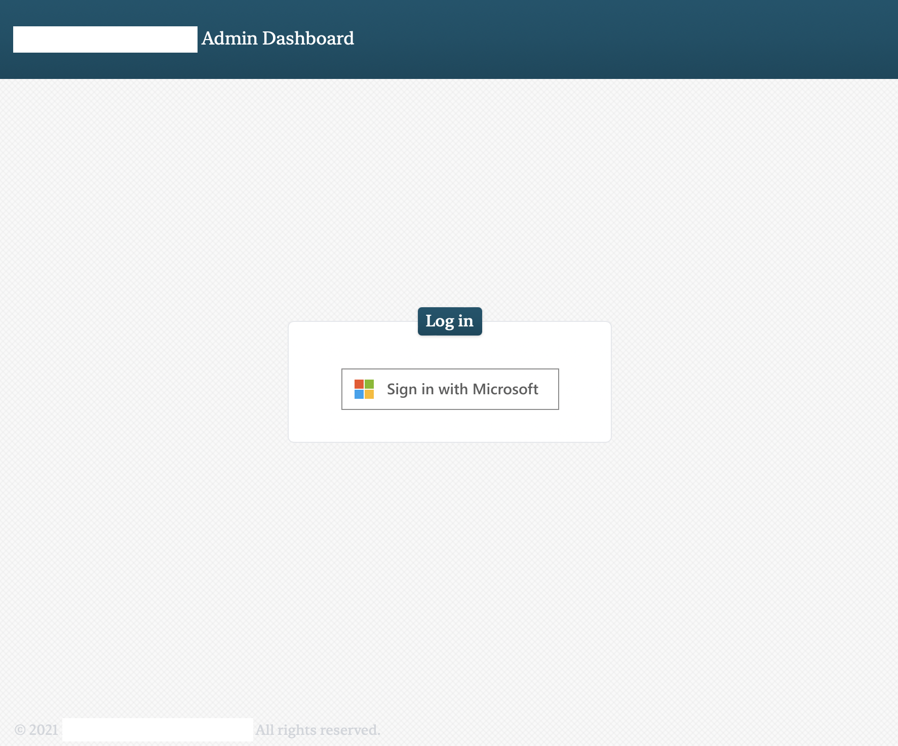

Anton Zakharov
Handshake · Contact
2022 · Client Dashboard
- Fully functional client management portal for a local tax prep business.
- Frontend: React, Tailwind.
- Backend: Firebase.
- Single sign-on through Microsoft Active Directory via Firebase Authentication.
- Stores client files (Firebase Cloud Storage) and data (Firebase Realtime Database).
- Separate client portal with e-mail authentication for file transfers.
- “Report View” – Excel-like mode.
- Backend Node API that connects to Quickbooks (client invoicing) and Jira (project management) for live updates.
- Centralized client creation workflow: creating a client in the dashboard creates one in Quickbooks and Jira.

2021 · Twitter Archivist · 
- Python application that renders scraped Twitter data as a webpage.
- Has a built-in server for daily updating & a “combined feed” to view all scraped users.
- Uses my modified version of an existing Twitter scraper that allows it to access private accounts (with authentication).
- On Github.

2019 · Timecard Processor ·
- Python application that processes timecard data for a tax prep business.
- Uses PyQt5.
- On Github.
2017 · shipbay.io
- Web app for purchasing and comparing postage.
- Uses APIs: Easyship, Google Maps, and Stripe.
- Frontend hosted on Google Firebase, uses Vue.
- Backend API written with Node, hosted serverless with AWS Lambda.
- Link. (Note: API changes have rendered the later pages inaccessible.)